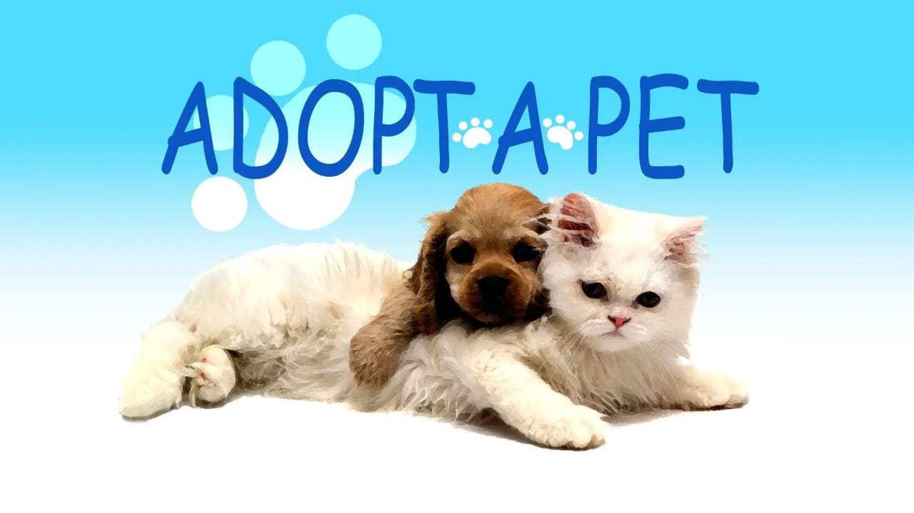

How to Adopt ?
Adopting a pet is easy! Follow these simple steps to bring home your new best friend:
- Visit our Pet Adoption Center during our open hours.
- Meet the pets available for adoption and spend some time getting to know them.
- Fill out an adoption application form. This form helps us ensure that our pets are going to good homes.
- Once your application is approved, pay the adoption fee.
- Complete any additional paperwork required, such as signing an adoption contract.
- Take your new pet home and start making memories!
If you have any questions about the adoption process, feel free to contact us.
